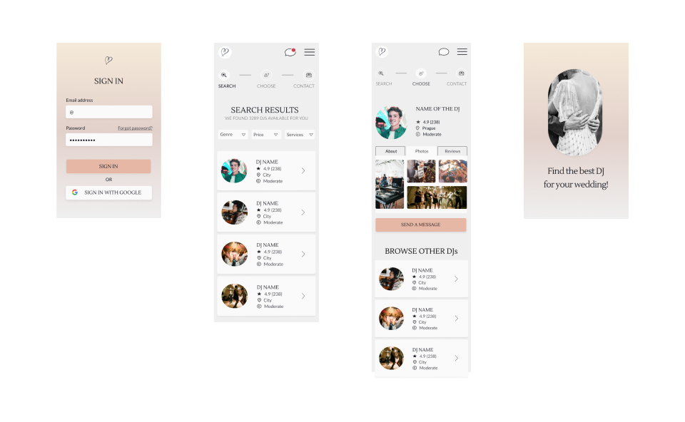
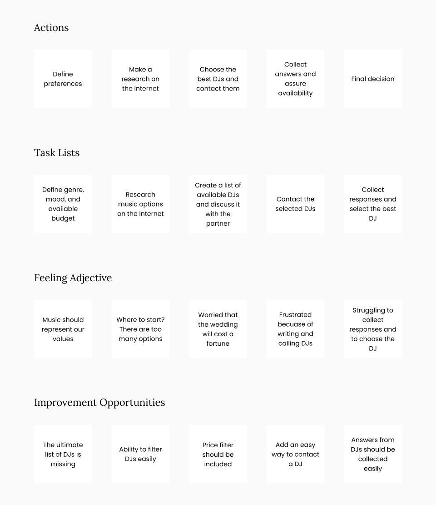
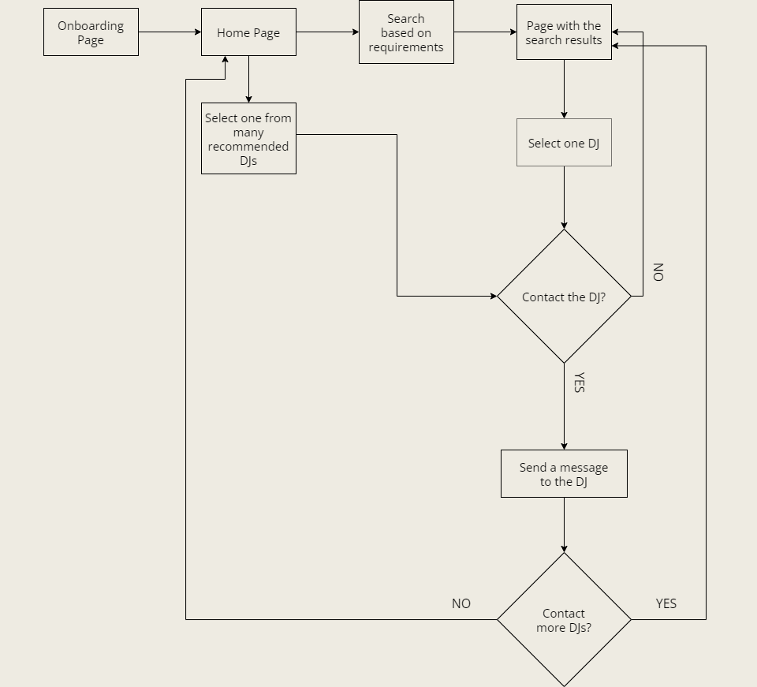
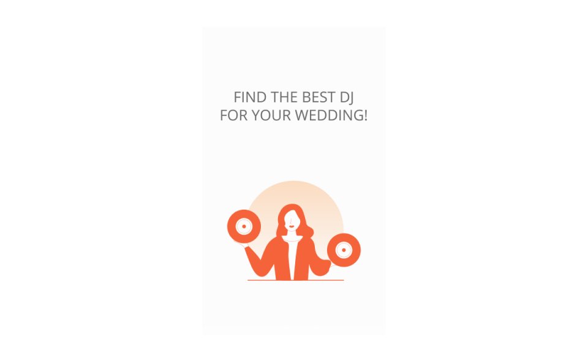
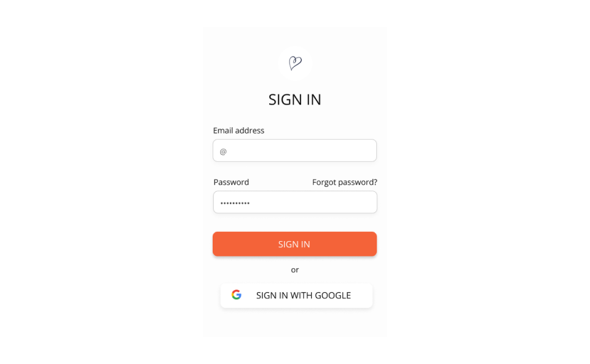
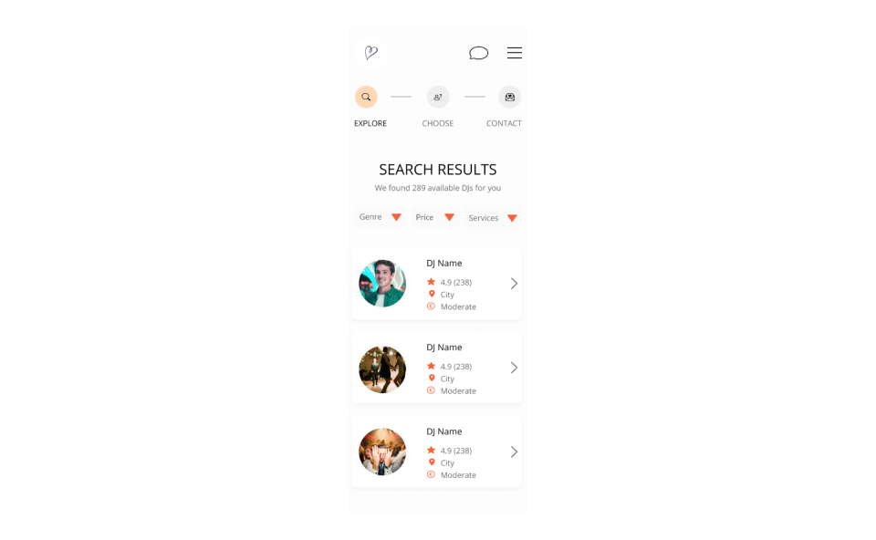
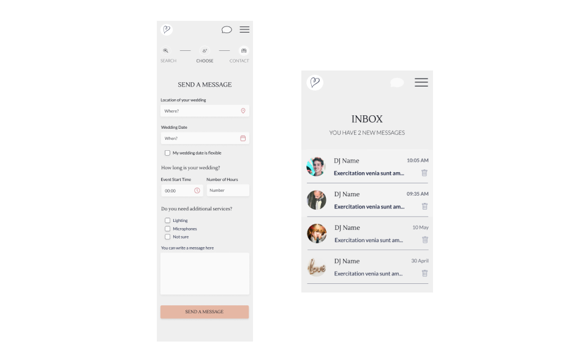

Wedding DJ application
The application should help to find and contact wedding DJs quickly without ineffective browsing the internet.
This project is a part of the Google UX Design certification path.
My design process included following steps:
User Research • Pain Points • Experience Map • Persona • User Journey Map • Paper Wireframes • Digital Wireframes • Mockup
User Research
I questioned 5 participants. They were people between the ages 18-62 who reside all over the world. Based on those interviews, I identified the main problem and defined the goal which should solve this problem.
The problem
There are too many DJs on the internet. All of them have their own website or social media. profile.
There is no easy way to contact the selected DJs.
The Goal
To create a straightforward workflow to send a request to the DJ without long browsing and searching for the contact
Speed up the process of wedding DJs booking
I abstracted pain points from the interview quotes, and mapped out an end-to-end experience users would have.
Pain Points
There is no one place where you can find various DJs and book them
Users have to visit official pages and social media profiles to get more details about the artist
Users need to find contacts, write or call to a few DJs and constantly keep in mind who has already replied
Persona
Alice
- Age: 29
- Education: University Degree
- Occupation: Marketing
Alice is a bride who needs to book a DJ who will follow the budget and respect her style because her wedding needs to represent her values.
Her Goals
- Wedding which represents her and hers boyfriend’s values
- To enjoy the wedding without being afraid of unpredictable expenses
Frustrations
- There are too many options.
- She is afraid the DJ will cost a lot of money which they actually do not have.
- We are tight on budget.
User Journey Map
Our persona is worry about the price of services provided by the selected DJ. She is also struggling to fing a proper option to contact DJs.
Experience Map
A visualization of an entire end-to-end experience that users go through in order to accomplish a goal.
Paper Wireframes
I used the Crazy Eights method to sketch eight variations of my application to generate more ideas. This is a method where I need to sketch eight variations of one screen in eight minutes. Usually, people use A4 paper folded three times to create eight blocks. I used smaller paper but still followed the rule of eight sketches.
Digital Wireframes
Filters
Filters help the user to select DJs who meet requirements.
Ratings
Stars are showing how the other users were satisfied with the DJ.
Profiles & messages
The user can learn more about the selected DJ from her or his profile which includes a short description, technical details, photos, and reviews.
The user can send a message directly in the app. Messages will be stored in one place which will speed up the process.
Mockup
Get started screen
This screen was simply created to encourage users to use the application and remind them the goal.
Sign in
Users would fill in a simple sign in form. They can also sign in with their Google accounts.
Search results
Users can easily filter search results by genre, price, and additional services.
Send a message
Users can simply send a message to the selected DJ. Messages are stored in the app inbox.
